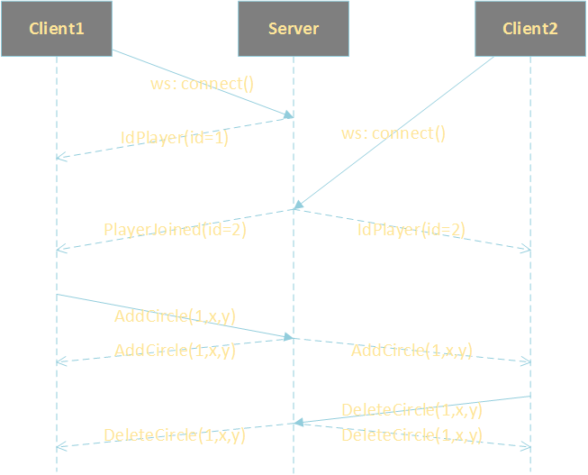

Multiple items
val string : value:'T -> string
Full name: Microsoft.FSharp.Core.Operators.string
--------------------
type string = System.String
Full name: Microsoft.FSharp.Core.string
val unbox : value:obj -> 'T
Full name: Microsoft.FSharp.Core.Operators.unbox
namespace System
namespace System.Timers
Multiple items
type Timer =
inherit Component
new : unit -> Timer + 1 overload
member AutoReset : bool with get, set
member BeginInit : unit -> unit
member Close : unit -> unit
member Enabled : bool with get, set
member EndInit : unit -> unit
member Interval : float with get, set
member Site : ISite with get, set
member Start : unit -> unit
member Stop : unit -> unit
...
Full name: System.Timers.Timer
--------------------
System.Timers.Timer() : unit
System.Timers.Timer(interval: float) : unit
val ignore : value:'T -> unit
Full name: Microsoft.FSharp.Core.Operators.ignore
Multiple items
type AllowNullLiteralAttribute =
inherit Attribute
new : unit -> AllowNullLiteralAttribute
new : value:bool -> AllowNullLiteralAttribute
member Value : bool
Full name: Microsoft.FSharp.Core.AllowNullLiteralAttribute
--------------------
new : unit -> AllowNullLiteralAttribute
new : value:bool -> AllowNullLiteralAttribute
type obj = System.Object
Full name: Microsoft.FSharp.Core.obj
val set : elements:seq<'T> -> Set<'T> (requires comparison)
Full name: Microsoft.FSharp.Core.ExtraTopLevelOperators.set
type ResizeArray<'T> = System.Collections.Generic.List<'T>
Full name: Microsoft.FSharp.Collections.ResizeArray<_>
Multiple items
val int : value:'T -> int (requires member op_Explicit)
Full name: Microsoft.FSharp.Core.Operators.int
--------------------
type int = int32
Full name: Microsoft.FSharp.Core.int
--------------------
type int<'Measure> = int
Full name: Microsoft.FSharp.Core.int<_>
Multiple items
val float : value:'T -> float (requires member op_Explicit)
Full name: Microsoft.FSharp.Core.Operators.float
--------------------
type float = System.Double
Full name: Microsoft.FSharp.Core.float
--------------------
type float<'Measure> = float
Full name: Microsoft.FSharp.Core.float<_>
Multiple items
module Map
from Microsoft.FSharp.Collections
--------------------
type Map<'Key,'Value (requires comparison)> =
interface IEnumerable
interface IComparable
interface IEnumerable<KeyValuePair<'Key,'Value>>
interface ICollection<KeyValuePair<'Key,'Value>>
interface IDictionary<'Key,'Value>
new : elements:seq<'Key * 'Value> -> Map<'Key,'Value>
member Add : key:'Key * value:'Value -> Map<'Key,'Value>
member ContainsKey : key:'Key -> bool
override Equals : obj -> bool
member Remove : key:'Key -> Map<'Key,'Value>
...
Full name: Microsoft.FSharp.Collections.Map<_,_>
--------------------
new : elements:seq<'Key * 'Value> -> Map<'Key,'Value>
type 'T array = 'T []
Full name: Microsoft.FSharp.Core.array<_>
type bool = System.Boolean
Full name: Microsoft.FSharp.Core.bool
type 'T option = Option<'T>
Full name: Microsoft.FSharp.Core.option<_>
type 'T list = List<'T>
Full name: Microsoft.FSharp.Collections.list<_>
union case Option.Some: Value: 'T -> Option<'T>
Multiple items
module List
from Microsoft.FSharp.Collections
--------------------
type List<'T> =
| ( [] )
| ( :: ) of Head: 'T * Tail: 'T list
interface IEnumerable
interface IEnumerable<'T>
member GetSlice : startIndex:int option * endIndex:int option -> 'T list
member Head : 'T
member IsEmpty : bool
member Item : index:int -> 'T with get
member Length : int
member Tail : 'T list
static member Cons : head:'T * tail:'T list -> 'T list
static member Empty : 'T list
Full name: Microsoft.FSharp.Collections.List<_>
val append : list1:'T list -> list2:'T list -> 'T list
Full name: Microsoft.FSharp.Collections.List.append
val distinct : list:'T list -> 'T list (requires equality)
Full name: Microsoft.FSharp.Collections.List.distinct
val except : itemsToExclude:seq<'T> -> list:'T list -> 'T list (requires equality)
Full name: Microsoft.FSharp.Collections.List.except
val map : mapping:('Key -> 'T -> 'U) -> table:Map<'Key,'T> -> Map<'Key,'U> (requires comparison)
Full name: Microsoft.FSharp.Collections.Map.map
module Array
from Microsoft.FSharp.Collections
val except : itemsToExclude:seq<'T> -> array:'T [] -> 'T [] (requires equality)
Full name: Microsoft.FSharp.Collections.Array.except
WebSocket Injection into a Fable-Elmish WebApp
Justin Sacks
WebSocket Injection into a Fable-Elmish WebApp
- Fable-Elmish Recap
- Traditional Events
- Subscription Events
- WebSockets
- Examples
Fable-Elmish
1:
2:
3:
4:
5:
6:
7:
8:
9:
10:
11:
12:
13:
14:
15:
16:
17:
|
type Model = { text: string }
type Msg =
| SetText of string
let init = { text = "Hello world" }
let update (msg:Msg) model =
match msg with
| SetText str -> { model with text = str }, Cmd.none
let view model dispatch =
R.div [] [ unbox model.text ]
Program.mkProgram init update view
|> Program.withReact "elmish-app"
|> Program.run
|
Traditional Events
-
Dispatch originates from view
- Subsequent side-effect messages can cascade
Traditional Events
Dispatch from view
1:
2:
3:
4:
|
let view model dispatch =
R.div [] [
R.button [ OnClick (fun _ -> dispatch Msg1) ] [ unbox "Click Me" ]
]
|
Side-effect
1:
2:
3:
4:
|
let update (msg:Msg) model =
match msg with
| Msg1 -> model, Cmd.ofMsg Msg2
| Msg2 -> ...
|
Subscription Events
-
Result of external event
Program.withSubscription allows subscriptions to call dispatch when they need to
Subscription Events
1:
2:
3:
4:
5:
6:
7:
8:
9:
10:
11:
|
let timerTick dispatch =
let timer = new System.Timers.Timer 1000.
timer.Elapsed.Subscribe (fun _ -> dispatch Msg1) |> ignore
timer.Enabled <- true
let subscribe model = Cmd.ofSub timerTick
Program.mkProgram init update view
|> Program.withSubscription subscribe
|> Program.withReact "elmish-app"
|> Program.run
|
WebSockets
- Standardized by IETF as RFC 6455
- Describes persistent connection between client (including but not limited to browser) and server
- Bidirectional
- Event-driven
WebSockets (Client)
Fable Bindings
1:
2:
3:
4:
5:
6:
7:
8:
9:
|
type [<AllowNullLiteral>] WebSocket =
...
abstract onmessage: Func<MessageEvent, obj> with get, set
type [<AllowNullLiteral>] WebSocketType =
...
[<Emit("new $0($1...)")>] abstract Create:
url: string * ?protocols: U2<string, ResizeArray<string>>
-> WebSocket
|
WebSockets (Client)
1:
2:
3:
4:
5:
6:
7:
8:
9:
10:
11:
12:
13:
14:
15:
16:
17:
|
// Shared messages between server and client
type WsMessage =
| SomethingHappened of string
let onMessage dispatch =
fun (msg: MessageEvent) ->
let msg' = msg.data |> string |> ofJson<WsMessage>
// Dispatch a local client message
match msg' with
| SomethingHappened e -> Msg1(e) |> dispatch
let ws = WebSocket.Create("ws://" + window.location.hostname + ":8080")
let wsCallbacks dispatch =
ws.onmessage <- unbox (onMessage dispatch)
let subscribe model = Cmd.ofSub wsCallbacks
|
WebSockets (Server)
- Can't use browser implementation
- Many server-specific implementations available
-
fable-elmish sample (counter-ws)
- Uses
fable-import-ws
- NodeJS (Express) server written in F#!
Examples - Counter-ws
- Modified version of fable-elmish counter sample
- Server counts for you
Examples - Circle War
- Click to create your own circles and destroy other players' circles
- Server keeps track of players and circles
- Broadcasts state changes to all clients
Examples - Circle War
Shared messages
1:
2:
3:
4:
5:
6:
7:
8:
9:
|
type PlayerId = int
type Coordinate = float * float
type PlayerCircles = Map<PlayerId,Coordinate array>
type WsMessage =
| IdPlayer of pid:PlayerId
| PlayerJoined of pid:PlayerId
| PlayerLeft of pid:PlayerId
| DeleteCircle of pid:PlayerId * x:float * y:float
| AddCircle of pid:PlayerId * x:float * y:float
|
Examples - Circle War
Client model
1:
2:
3:
4:
5:
6:
7:
8:
9:
10:
11:
|
type Model =
{ connected: bool
playerId: PlayerId option
otherPlayers: PlayerId list
circles: PlayerCircles }
// Local client messages
type Msg =
...
| Send of WsMessage
| Rcv of WsMessage
|
Examples - Circle War

Examples - Circle War
Client message handling
1:
2:
3:
4:
5:
6:
7:
8:
9:
10:
11:
12:
13:
|
let onMessage dispatch =
fun (msg: MessageEvent) ->
msg.data |> string |> ofJson |> Rcv |> dispatch
let onOpen dispatch = fun _ -> Connected true |> dispatch
let onClose dispatch = fun _ -> Connected false |> dispatch
let wsCallbacks dispatch =
ws.onmessage <- unbox (onMessage dispatch)
ws.onopen <- unbox (onOpen dispatch)
ws.onclose <- unbox (onClose dispatch)
let subscribe model = Cmd.ofSub wsCallbacks
|
Examples - Circle War
Client message handling
1:
2:
3:
4:
5:
6:
7:
8:
9:
|
let update (msg:Msg) model =
match msg with
...
| Connected c -> { model with connected = c }, Cmd.none
| Rcv (IdPlayer pid) -> { model with playerId = Some pid }, Cmd.none
| Rcv (PlayerJoined pid) -> { model with otherPlayers = model.otherPlayers |> List.append [ pid ] |> List.distinct}, Cmd.none
| Rcv (PlayerLeft pid) -> { model with otherPlayers = model.otherPlayers |> List.except [ pid ]}, Cmd.none
| Rcv (AddCircle(pid,x,y)) -> { model with circles = model.circles |> addCircle(pid,x,y) }, Cmd.none
| Rcv (DeleteCircle(pid,x,y)) -> { model with circles = model.circles |> Map.map (fun p coords -> if pid = p then coords |> Array.except [x,y] else coords) }, Cmd.none
|